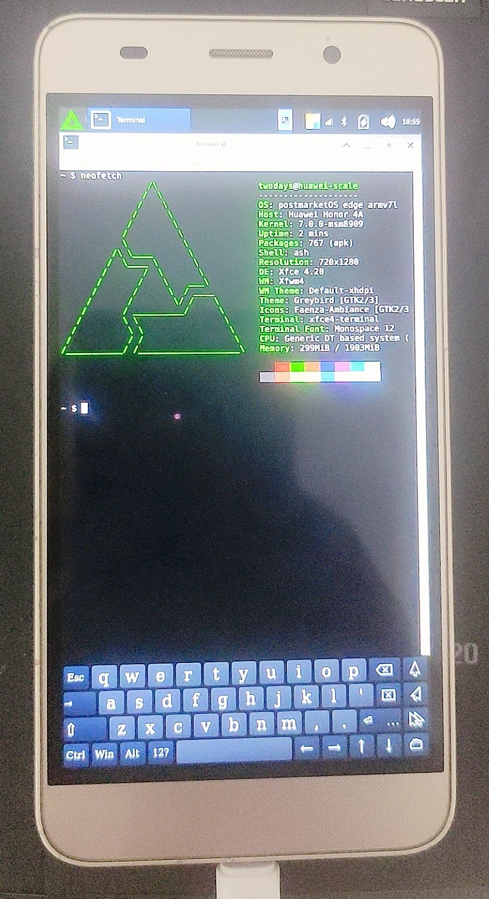

Huawei Honor 4A (huawei-scale)
| This device is supported as part of a generic port. Refer to Generic MSM8909 (qcom-msm8909) for installation instructions and more information. |
|
 | |
| Manufacturer | Huawei |
|---|---|
| Name | Honor 4A |
| Codename | huawei-scale |
| Model | SCL-* |
| Released | 2015 |
| Type | handset |
| Hardware | |
| Chipset | Qualcomm Snapdragon 210 (MSM8909) |
| CPU | Quad-core 1.1 GHz Cortex-A7 |
| GPU | Adreno 304 |
| Display | 720 x 1280 5.0" IPS LCD |
| Storage | 8 GB |
| Memory | 2 GB |
| Architecture | armv7 |
| Software | |
Original software
The software and version the device was shipped with.
|
Android 5.1 |
Extended version
The most recent supported version from the manufacturer.
|
Android |
| postmarketOS | |
| Category | testing |
Mainline
Instead of a Linux kernel fork, it is possible to run (Close to) Mainline.
|
yes |
| Generic port | Generic MSM8909 (qcom-msm8909) |
| Device package |
|
| Kernel package |
|
{kind=link}
Flashing
Whether it is possible to flash the device with
pmbootstrap flasher. |
Works
|
|---|---|
USB Networking
After connecting the device with USB to your PC, you can connect to it via telnet (initramfs) or SSH (booted system).
|
Untested
|
Internal storage
eMMC, SD cards, UFS...
|
Works
|
SD card
Also includes other external storage cards.
|
Works
|
Battery
Whether charging and battery level reporting work.
|
Partial
|
Screen
Whether the display works; ideally with sleep mode and brightness control.
|
Partial
|
Touchscreen |
Works
|
| Multimedia | |
3D Acceleration |
Broken
|
Audio
Audio playback, microphone, headset and buttons.
|
Broken
|
Camera |
Broken
|
| Connectivity | |
WiFi |
Partial
|
Bluetooth |
Partial
|
GPS |
Untested
|
| Modem | |
Calls |
Broken
|
SMS |
Broken
|
Mobile data |
Broken
|
| Miscellaneous | |
FDE
Full disk encryption and unlocking with unl0kr.
|
Untested
|
USB OTG
USB On-The-Go or USB-C Role switching.
|
Untested
|
| Sensors | |
Accelerometer
Handles automatic screen rotation in many interfaces.
|
Untested
|
The Huawei Honor 4A is an MSM8909-based phone released in 2015. Huawei uses
the board codename scale for this device family. The downstream
device trees contain several SCL variants, including SCL-AL, SCL-CL, SCL-L,
SCL-TL and SCL-U models. Only one device has been tested during the initial
mainline bring-up, so hardware differences between variants may still exist.
This port uses a mainline Linux kernel fork with a device tree for
qcom-msm8909-huawei-scale. The display currently relies on the
framebuffer initialized by the bootloader and exposed through simpledrm.
How to enter flash mode (fastboot)
From Android:
adb reboot bootloader
With the device powered off, hold while connecting USB or powering the device on. This depends on the bootloader version.
Bootloader unlock
Huawei no longer provides official bootloader unlock codes for these older devices. This port assumes that the device can already boot custom images, or that lk2nd is already installed.
Installation
| 🚧 | This page is a work-in-progress. Some information contained within may be inaccurate or incomplete. |
lk2nd is a secondary bootloader that provides a standard fastboot interface, which can be used to boot postmarketOS without Android boot flashed or pmbootstrap flasher flash_kernel.
- Download lk2nd-msm8909.img from Releases page on Github.
- Boot your phone to bootloader (fastboot) mode.
- Follow lk2nd instructions to install lk2nd. Basically flash it to the boot partition (
fastboot flash boot lk2nd-msm8909.img) - Follow Qualcomm_Snapdragon_410/412_(MSM8916)#Installation to install postmarketOS.
| Note: Enter lk2nd fastboot mode by pressing after booting (this time wait until it vibrates then press ! |
The device tree for this phone has been merged into upstream lk2nd. However,
as of 2026-06-19, the lk2nd maintainer has not built a new release image that
includes this device yet. The prebuilt lk2nd release image available for
download may therefore not support huawei-scale. Build lk2nd from
the latest upstream source if the downloaded release image does not boot this
device.
The packages required to build images for this device have not been merged into
pmaports yet. Because of that, pmbootstrap cannot build this
device directly from the official pmaports tree at the moment. The kernel
source tree containing the device tree for huawei-scale is
available, so users can create local device, firmware and Linux kernel packages
for testing.
The device package uses fastboot boot images and appends the device tree to the kernel image. The root filesystem is installed to eMMC. Recent local test images used a larger rootfs partition after merging unused Android partitions, but the postmarketOS device package itself does not depend on a specific Android partition number.
Example postmarketOS installation flow:
pmbootstrap init
pmbootstrap install
pmbootstrap flasher flash_rootfs
pmbootstrap flasher flash_kernel
When debugging early boot, USB gadget serial on ttyGS0 is used for
the console:
console=ttyGS0,115200n8 console=tty0 panic=0 loglevel=6 clk_ignore_unused pd_ignore_unused msm.modeset=0
What works
| Feature | Components | Status | Driver | Notes |
|---|---|---|---|---|
| Display | Bootloader framebuffer, simpledrm | P | P | Native MDP3/DSI panel bring-up is not done. The current port preserves the bootloader framebuffer and exposes it through simpledrm/simple-framebuffer. |
| GPU | Adreno 304 | N | P | The freedreno driver exists for Adreno 3xx, but this port currently uses simpledrm and software rendering. |
| Touchscreen | Cypress TrueTouch / CYTTSP5 | Y | P | The touchscreen is connected on BLSP1 QUP5 at I2C address 0x1c. A device-specific CYTTSP5 quirk is required.
|
| WiFi | Qualcomm WCN3620 / WCNSS | P | Y | WCNSS remoteproc boots and wcn36xx creates wlan0. Proprietary WCNSS firmware is required.
|
| Bluetooth | P | Y | Uses the mainline btqcomsmd driver through the qcom,wcnss-bt node. Pairing has not been fully tested.
|
|
| FM radio | Not tested. | |||
| eMMC | Internal storage | Y | Y | Works with the MSM SDHCI controller. |
| microSD | External storage | Y | Y | Works after using the external SDHCI controller with broken card-detect handling. |
| Buttons | PMIC pwrkey, PMIC resin, TLMM GPIO | Y | Y | Power key is handled by pm8941-pwrkey. Volume down uses pm8909_resin. Volume up uses TLMM GPIO 90.
|
| Battery / charger | PM8909 LBC / BMS | P | P | Basic battery reporting is expected through PM8909 LBC/BMS. Charging behavior needs more testing. |
| USB device mode | ChipIdea USB controller, Qualcomm HS PHY | P | Y | USB gadget serial works for debugging. USB networking is not working or not tested. |
| Audio | PM8909 audio codec / analog audio path | N | Not brought up. | |
| Modem | MSM8909 modem | N | Not brought up. Calls, SMS and mobile data are unsupported. | |
| Camera | Front and rear cameras | N | Not brought up. | |
| Sensors | Accelerometer, proximity/light, magnetometer | Not tested. |
Display
The device uses MSM8909, where the display hardware path differs from the better-supported MSM8916 MDP5 devices. Mainline MDP3/DSI panel support is not used by this port yet. Instead, the bootloader-initialized framebuffer is kept alive and described as a simple framebuffer:
framebuffer@83200000 {
compatible = "simple-framebuffer";
reg = <0x83200000 0x00800000>;
width = <720>;
height = <1280>;
stride = <2160>;
format = "r8g8b8";
};
The kernel command line keeps MSM DRM from taking over the display:
msm.modeset=0
Logs mentioning simpledrm are expected, for example:
simple-framebuffer 83200000.framebuffer: [drm] fb0: simpledrmdrmfb frame buffer device
This does not mean that the native MDP3 panel driver is working.
WiFi and Bluetooth firmware
WiFi and Bluetooth use WCNSS/WCN3620. The following firmware files are needed:
wcnss.b00
wcnss.b01
wcnss.b02
wcnss.b04
wcnss.b06
wcnss.b09
wcnss.b10
wcnss.b11
wcnss.b12
wcnss.mdt
WCNSS_cfg.dat
WCNSS_qcom_wlan_nv.bin
WCNSS_qcom_wlan_nv_4x.bin
WCNSS_wlan_dictionary.dat
The local pmaports package installs these through
firmware-huawei-scale. The device package depends on
firmware-huawei-scale, firmware-qcom-adreno-a300 and
msm-firmware-loader.
Expected kernel messages when WCNSS comes up:
remoteproc remoteproc0: remote processor a204000.remoteproc is now up
qcom_wcnss_ctrl remoteproc0:smd-edge.WCNSS_CTRL.-1.-1: WCNSS Version 1.5 1.2
wcn36xx: firmware API 1.5.1.2
Known issues
- Native display support is missing. The current display path depends on the framebuffer left by the bootloader.
- Hardware accelerated graphics are not available with the current simpledrm setup.
- USB networking is not working or has not been validated; use the USB gadget serial console for early debugging.
- Bluetooth has the kernel driver and device tree nodes, but pairing and audio profiles need testing.
- Audio, modem, cameras and sensors are not brought up.
- Full disk encryption is untested.
Downstream information
The downstream Huawei kernel contains the scale device tree fragments under:
arch/arm/boot/dts/qcom/scale/
arch/arm/boot/dts/qcom/msm8909-qrd-scl-*.dts
Useful details recovered from downstream:
- Touchscreen reset is on TLMM GPIO 12.
- Touchscreen interrupt is on TLMM GPIO 13.
- Touchscreen power enable is on TLMM GPIO 97.
- Volume up is on TLMM GPIO 90.
- Volume down is not TLMM GPIO 91; it uses the PM8909 RESIN input.
- WCNSS iris is compatible with
qcom,wcn3620.
Contributors
- 2Days
Maintainers
Users owning this device